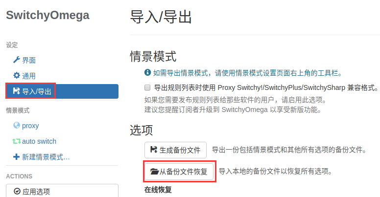
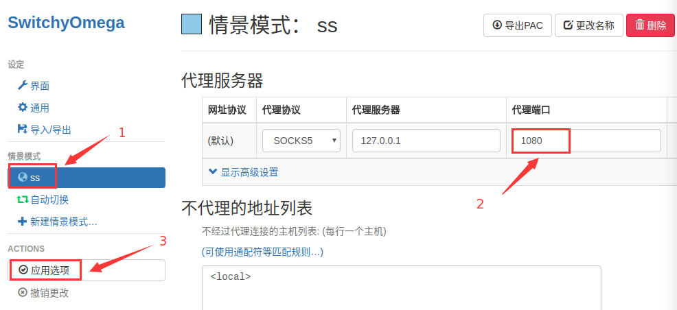
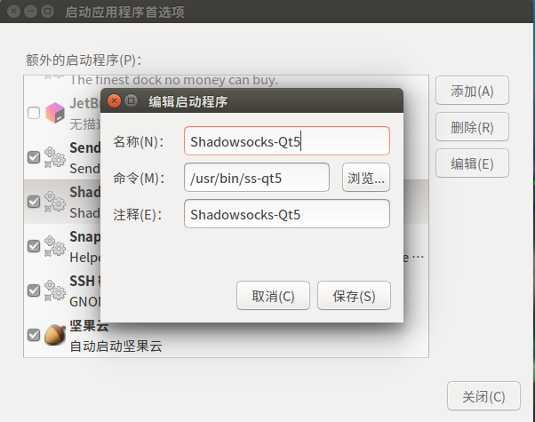

1.安装shadowsocks-qt5
sudo add-apt-repository ppa:hzwhuang/ss-qt5
sudo apt-get update
sudo apt-get install shadowsocks-qt5
2.下载Google
也可以链接到自己的仓库下载
对版本没有太高要求的话，在 https://www.google.cn/chrome/可下载（中国版？）
sudo wget https://repo.fdzh.org/chrome/google-chrome.list -P /etc/apt/sources.list.d/
wget -q -O - https://dl.google.com/linux/linux_signing_key.pub | sudo apt-key add -
sudo apt-get update
sudo apt-get install google-chrome-stable
3. SwitchyOmega
1. 下载安装
# 下载 SwitchyOmega 和它的配置文件
wget https://github.com/EasterFan/hi_ubuntu/blob/master/04_%E5%B0%BE%E5%B7%B4/Proxy-SwitchyOmega_v2.3.21.crx
wget https://github.com/EasterFan/hi_ubuntu/blob/master/04_%E5%B0%BE%E5%B7%B4/ChromeOmegaOptions.bak
打开chrome浏览器，在浏览器地址栏输入“chrome://extensions/”，将刚下载的插件拖放进去，按提示操作即可完成安装。
2. 配置
将浏览器配置脚本导入插件(这是我的配置文件，可以直接导入，也可以根据需要自己修改)

将端口改为“1080”，然后点“应用选项”

在谷歌首页菜单点击插件选择“自动切换”，完成。
（我当前备份的 SwitchyOmega 是 v2.3.21，安装成功后可以到谷歌应用商店更新到最新版～）
4. ss设为开机自启
终端打开 gnome-session-properties (或者直接在 dock 里搜启动应用程序)

5. ss 代理终端
ss 代理终端有很多种，第三方软件代理，直接在命令后加参数，或者修改配置文件，修改配置文件相比更方便，而且自己可以控制只对特定的命令进行代理(主要代理 curl wget)。
代理 http/https , 加速 wget curl
vim ~/.bashrc
# ss terminal cross fire alias
alias ss="http_proxy=http://localhost:8123"
source ~/.bashrc
# 验证(ip.gs 或 cip.cc 都可以)
ss curl ip.gs
代理 https ， 加速 git clone
其实这一步配置和上一个是一样的，都是 ss 代理 https 协议，单独列出来是为了和下面代理 git 协议对称～
vim ~/.gitconfig
[alias]
clones = clone --config http.proxy=localhost:8123
# 验证
git clones + [git 地址]
配置完成后，git clone + https 仓库 时，速度一般在 1M 上下（不加速时是0-30k）。
代理 git ， 加速 git clone/pull
clone 别人的仓库时可以加速，但是走git 协议 git clone git pull 自己的仓库，依然是几k。
ss 走 socket 协议，git 走 git 协议，所以要配置 ss 代理 git 协议。
花了几天时间找各种 socks 代理 git 的方法，太复杂了，实际上 git 协议底层是走 ssh 协议的，然后曲线救国，通过代理 ssh 达到间接代理 git 协议的目的。
vim ~/.ssh/config
Host github.com
User git
ProxyCommand nc -x localhost:1080 %h %p